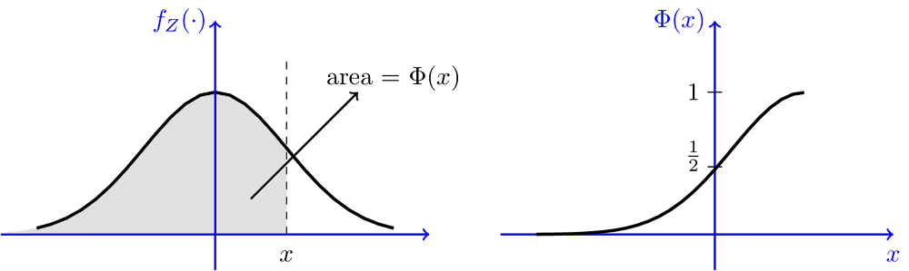

3.10 Figures
The idea is to generate the figure, output to local, then reload using the following code.
```{r car-plot, eval=TRUE, fig.asp = 0.62, echo=FALSE, out.width="80%", fig.cap="Caption here." }
knitr::include_graphics(img1_path)
```Use code chunk label to cross reference, e.g., Fig. \@ref(fig:car-plot).
Note that you must specify
fig.capto enable labeling and cross references. Otherwise, the cross reference will showFig. ??.knitr::include_graphicssupports web url for html output, but NOT for latex output.
Alternatively, use fig.width to fix the figure width, and fig.asp to fix the aspect ratio (height:width).
```{r car-plot2, fig.width=6, fig.asp=0.6, fig.cap="Caption here." }
library(AER)
data(CASchools)
library(ggplot2)
ggplot(CASchools, aes(x = expenditure)) +
geom_histogram(binwidth = 500, fill = "lightblue", color = "black") +
labs(title = "Histogram of Expenditure per Student",
x = "Expenditure per Student (USD)",
y = "Frequency") +
theme_minimal(base_size = 14)
```
Figure 3.1: Historgram of Expenditure per Student. Fixed fig.width and fig.asp.
3.10.1 Output directly to document
You can let the code output to document directly, i.e., not generating a file and reload.
But in this case, scale the figure will change the plot text too. The text might be scaled unexpectedly too small/large. Just be careful with it.
Load data.
library(quantmod)
aapl <- getSymbols("AAPL",
src = 'yahoo',
from = "2014-08-01",
to = "2024-09-17",
auto.assign = FALSE
)out.width="50%"
```{r out.width="50%", fig.asp = 0.62, fig.cap="`out.width=\"50%\"`, fig.asp set to 0.62."}
# plot text is scaled too
plot(aapl$AAPL.Close)
```
Figure 3.2: out.width=50%, fig.asp set to 0.62. Note that text font scales too, hard to read.test
out.width="100%"
Figure 3.3: out.width=100%, fig.asp set to 0.6. Note that the plot text got zoomed too, can be too large.
3.10.2 Fixed fig.width
- Text does NOT scale with figure size; visibility is good. ✅
```{r fig.width=6, fig.asp=0.6}
# Text font does NOT scale, but figure title got cropped
plot(aapl$AAPL.Close)
```
Figure 3.4: Set fig.width. Note that text font does NOT scale with figure, BUT the figure title got cropped.
3.10.3 Save and reload
This approach preserves your preference better, maintains the relative size of your figure and the text.
No cropping, no fuss.
f_name <- "images/aapl.png"
png(f_name, width=2594, height=1600, res=300)
plot(aapl$AAPL.Close)
invisible(dev.off())```{r out.width="50%", fig.cap="include_graphics with `out.width`=50%."}
knitr::include_graphics(f_name)
```
Figure 3.5: include_graphics with out.width=50%.
```{r out.width="100%", fig.cap="include_graphics with `out.width`=100%." }
knitr::include_graphics(f_name)
```
Figure 3.6: include_graphics with out.width=100%.
Q: How to suppress the following dev.off() messages generated by code chunks in Rmd?
A: Enclose dev.off() within invisible(), or dump the result of dev.off() to a garbage variable.
Specify code chunk options fig.width and fig.height for R-generated figures only.
- Default is
fig.width = 7andfig.height = 5(in inches, though actual width will depend on screen resolution). Remember that these settings will default tormarkdownvalues, notknitrvalues. - If don’t know what size is suitable, can right-click the Plots Viewer and choose “Copy Image Address”. Scale by
/100(in inches) and fill the values to chunk options.
out.width and out.height apply to both existing images and R-generated figures.
note that the percentage need to be put in quotes.
fig.widthdo not scale font, it shows the original font size.out.widthscales the whole figure. Better to use this one. If you want to fix aspect ratio, usefig.asp=0.6to set height:width = 6:10.out.widthkeeps the original aspect ratio of the figure and scale the text in the figure too.But what most people want is to scale the figure but not the text. For instance, you want to scale your figure to 70% width of page, but you want to keep the original size of text so it is readable.
A caveat with
out.widthis that the axis labels and ticks will be so small and hard to read.
Other chunk options related to figures:
fig.cap=NULL specify figure captions. Must provide fig.cap if you need to cross reference the figure.
See Fig. \@ref(fig:car-plot) use code chunk label to cross reference. The chunk label (car-plot) provides the identifier for referencing the figure generated by the chunk.
Fig. \@ref(fig:logit-regression)use to insert a non-breaking space.
fig.align="center" to set figure alignment.
fig.pos="H" fix placement.
fig.asp=0.6 aspect ratio height:width=6:10.
Suggested practice so that you have correct aspect ratio and automatically scaled text and labels in figures. ✅
Generate the figure and save to local
The benefit is that you have full control to adjust the figure as needed, such as font size, and could reuse it later.
```{r echo=FALSE, include=FALSE} p <- ggplot(contingency_table %>% as_tibble() %>% mutate(chd69=factor(chd69, levels=c("non-developed", "developed"))), aes(x=smoke, y=n, fill=chd69)) + geom_bar(position="stack", stat="identity", color="black", linewidth=0.1) + scale_fill_grey(start=0.88, end=0.7) + labs(y="Frequency") + theme(axis.title.x = element_blank(), legend.position = "bottom") f_name <- "images/stacked_bar.png" plot_png(p, f_name, 5.17, 5) ```Specify chunk options
include=FALSE(Do not include code output) to suppress the graphic window information like the following.Add the figure using
Cross reference
pdf_document: using\autoref{fig:scatter-plot}fromhyperrefpackage orFig. \ref{fig:scatter-plot}from base latex.hyperrefusesFigure, could be changed toFig.by putting the following cmd at the begin of the Rmd.bookdown::html_document2: using\@ref(fig:scatter-plot).
Latex symbols in Fig. caption
The R code block approach.
\\Phiworks. You need to escape the\in\Phi.If there are quotation marks (
") in the figure caption, need to escape them using\"...\"to distinguish from the outer quotes of the caption parameter.You can use regular Markdown syntax in Fig captions, such as using
**Bold**to make text bold.Better to use R code blocks to include figures.
Note that
include_graphics("https://link-to-Google-drive")does NOT work for pdf output. Works for html output though.If using html tag
<figure>, the numbering will be messed up. There is only automatic numbering with R code figures.Use example:
```{r fig.cap="The $\\Phi$ and $\\phi$ ($f_Z(.)$) functions (CDF and pdf of standard normal).", out.width="70%", echo=FALSE} include_graphics("images/Phi_b.png") ```Will generate the following Fig 3.7.
Figure 3.7: The \(\Phi\) and \(\phi\) (\(f_Z(.)\)) functions (CDF and pdf of standard normal).
Alternatively, use the HTML approach, and enclose the caption inside <figcaption>.
- Benefit: You can type equations as you normally do. Don’t need to escape backslashes as using the R code blocks in the example above.
- Drawback: You need to manually add figure numbering.
❗️That means, when you change the order of sections or figures in your webpage, the numbering will be a mess. You need to change all capitals manually.
<figure>
<img src="https://drive.google.com/thumbnail?id=1nxfdIKXgZvOqXVSeA3h_hf0yxmsM361l&sz=w1000" alt="Phi_b" style="display: block; margin-right: auto; margin-left: auto; zoom:80%;" />
<figcaption>Fig.1 The $\Phi$ and $\phi$ ($f_Z(.)$) functions (CDF and pdf of standard normal).</figcaption>
</figure>Refer to another figure in figure caption
Just need to use double backslash \\@ref(fig:xxx) in the figure caption.
Use example:
We first generate the figure to be referenced.
```{r firstplot, out.width="60%", fig.cap="Source Figure to be referred to."}
library(ggplot2)
p <- ggplot(mtcars, aes(wt, mpg))
plot_A <- p + geom_point()
plot_A
```
Figure 3.8: Source Figure to be referenced. Note that when specifying out.width=60%, the text in the figure is scaled too small.
Now a second plot with a reference to Fig.: 3.8.
```{r secondplot, fig.cap = "This is the same as Fig.: \\@ref(fig:firstplot) but now with a red line." }
plot_A + geom_line(alpha = .75,col = "red")
```
Figure 3.9: This is the same as Fig.: 3.8 but now with a red line and out.width=100%.